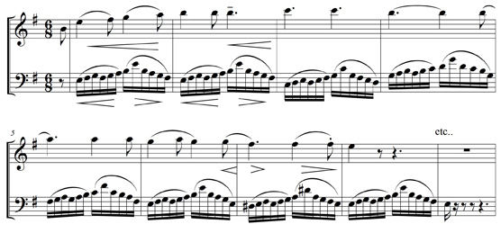
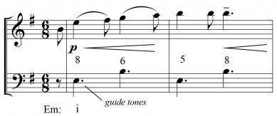
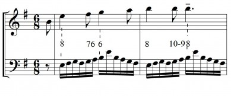
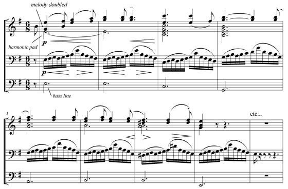

<?xml version="1.0" encoding="UTF-8"?><rss version="2.0"
	xmlns:content="http://purl.org/rss/1.0/modules/content/"
	xmlns:wfw="http://wellformedweb.org/CommentAPI/"
	xmlns:dc="http://purl.org/dc/elements/1.1/"
	xmlns:atom="http://www.w3.org/2005/Atom"
	xmlns:sy="http://purl.org/rss/1.0/modules/syndication/"
	xmlns:slash="http://purl.org/rss/1.0/modules/slash/"
	xmlns:itunes="http://www.itunes.com/dtds/podcast-1.0.dtd"
xmlns:rawvoice="http://www.rawvoice.com/rawvoiceRssModule/"
xmlns:googleplay="http://www.google.com/schemas/play-podcasts/1.0/play-podcasts.xsd"
>

<channel>
	<title>Alain Mayrand &#8211; SCOREcastOnline.com</title>
	<atom:link href="." rel="self" type="application/rss+xml" />
	<link>http://www.scorecastonline.com</link>
	<description>Global Community for the Professional Media Composer</description>
	<lastBuildDate>Mon, 19 Jun 2017 08:43:18 +0000</lastBuildDate>
	<language>en-US</language>
	<sy:updatePeriod>hourly</sy:updatePeriod>
	<sy:updateFrequency>1</sy:updateFrequency>
	<generator>https://wordpress.org/?v=4.8</generator>
<!-- podcast_generator="Blubrry PowerPress/7.0.4 beta" mode="advanced" feedslug="feed" -->
	<itunes:summary>Global Community for the Professional Media Composer</itunes:summary>
	<itunes:author>Alain Mayrand &#8211; SCOREcastOnline.com</itunes:author>
	<itunes:image href="../../../wp-content/plugins/powerpress/itunes_default.jpg" />
	<itunes:subtitle>Global Community for the Professional Media Composer</itunes:subtitle>
	<image>
		<title>Alain Mayrand &#8211; SCOREcastOnline.com</title>
		<url>../../../wp-content/uploads/powerpress/sig-SCO.jpg</url>
		<link>http://www.scorecastonline.com</link>
	</image>
<site xmlns="com-wordpress:feed-additions:1">29563098</site>	<item>
		<title>The Running Line in Orchestral Writing</title>
		<link>../../../2012/07/02/running-line-orchestral-writing/</link>
		<comments>../../../2012/07/02/running-line-orchestral-writing/#comments</comments>
		<pubDate>Mon, 02 Jul 2012 13:00:00 +0000</pubDate>
		<dc:creator><![CDATA[Alain Mayrand]]></dc:creator>
				<category><![CDATA[Composition]]></category>
		<category><![CDATA[Latest Resources]]></category>

		<guid isPermaLink="false">../../../?p=1568</guid>
		<description><![CDATA[Composer Alain Mayrand teaches us how to add motion and activity to our orchestral writing by using running lines.]]></description>
				<content:encoded><![CDATA[<p>A running line as an accompaniment is a traditional device in orchestral writing that is very well suited for today&#8217;s film score writing.</p>
<p>As an example we will look at one of my favourite examples of running-line accompaniment from Smetana’s beautifully expressive “The Moldau”. Here it is, presented here in a simplified two-part version.</p>
<p><em><strong>Ex.1</strong></em></p>
<p><a href="../../../?attachment_id=1633" rel="attachment wp-att-1633"></a></p>
<p><iframe width="100%" height="166" scrolling="no" frameborder="no" src="//w.soundcloud.com/player/?url=http%3A%2F%2Fapi.soundcloud.com%2Ftracks%2F51365162%3Fsecret_token%3Ds-lgv8v&#038;show_artwork=true&#038;secret_url=true"></iframe></p>
<p>First off, what is the reason for using this kind of writing? As a composer, arranger and orchestrator, you should always use the tools at your disposal with a specific end in mind, so this is an important question to consider.</p>
<p>It creates a feeling of activity that may not be present in the melody. For this piece it represents the running waters of the river Moldau in what is now the Czech Republic.</p>
<p>Here the dynamic is quite soft and played in the strings, so the sound is perfect to represent the water. But this is a flexible technique and not limited to this usage. You can play it loud for supporting action or heroic passages and any other place that you need a sense of movement. It does not need to be under the melody but can also be above to create a shimmering effect. Don&#8217;t limit yourself to the present musical context.</p>
<p><strong>How to approach writing something like this quickly.</strong></p>
<p>After all, when writing for film you must write quickly, that&#8217;s a given. So here my main tips for this.</p>
<p>Important thing to note is that the running line should be written <em>after</em> the melody so it supports it contrapuntally, rather than the other way around.</p>
<p>Know what harmony your running line should delineate. You running line will work 100% of the time if it clearly articulates your harmony on the strong beats.</p>
<p>Second, set up an outline for your running counterpoint just at the important rhythmic and metric points. Here&#8217;s what that would look like (you can jot it down as you see here, or have these notes as markers in your mind as you work.)</p>
<p><em><strong>Ex. 2</strong></em></p>
<p><a href="../../../?attachment_id=1634" rel="attachment wp-att-1634"></a></p>
<p><iframe width="100%" height="166" scrolling="no" frameborder="no" src="//w.soundcloud.com/player/?url=http%3A%2F%2Fapi.soundcloud.com%2Ftracks%2F51365203%3Fsecret_token%3Ds-NWdvE&#038;show_artwork=true&#038;secret_url=true"></iframe></p>
<p>The dotted eighths in the bass “guide tones” for the running line. With a basic knowledge of counterpoint this can be done very quickly.</p>
<p>All the notes in between the guide tones can then be decorated with our running line. The dissonances that happen on metrically weaker positions are not that important, especially at faster tempi, but you should still be aware of your counterpoint, so keep an eye on it.</p>
<p>Here is the filled out line based on the guide tones above.</p>
<p><em><strong>Ex. 3</strong></em></p>
<p><a href="../../../?attachment_id=1635" rel="attachment wp-att-1635"></a></p>
<p><iframe width="100%" height="166" scrolling="no" frameborder="no" src="//w.soundcloud.com/player/?url=http%3A%2F%2Fapi.soundcloud.com%2Ftracks%2F51365276%3Fsecret_token%3Ds-uzj2B&#038;show_artwork=true&#038;secret_url=true"></iframe></p>
<p>Once you have your running line pattern, don’t go crazy and change it for every measure afterwards. Keep it going, just changing it to follow the harmony. Developing and repeating the material you already have is better composition and will take less time as well, so you win on both counts. Go back to the first example to see how the running line follows the harmony.</p>
<p>Once you have your two main elements laid out: your melody and the running line, you can add some extra materials to the arrangement/orchestration.</p>
<ul>
<li>Doublings in octaves, 3rds, 6hts and chords.</li>
<li>Held chords, a.k.a. “pads”</li>
<li>Bass notes</li>
<li>And of course assigning your instruments and breaking it up to get the final result.</li>
</ul>
<p><em><strong>Ex. 4</strong></em></p>
<p><a href="../../../?attachment_id=1637" rel="attachment wp-att-1637"></a></p>
<p><iframe width="100%" height="166" scrolling="no" frameborder="no" src="//w.soundcloud.com/player/?url=http%3A%2F%2Fapi.soundcloud.com%2Ftracks%2F51365297%3Fsecret_token%3Ds-5LcaP&#038;show_artwork=true&#038;secret_url=true"></iframe></p>
<p><em>This is also a simplified version by the way, for the sake of clarity and brevity!</em></p>
<p>And there you have it, a few simple steps to your own running lines. Apply this up in the high registers above your melody or down below, fast or slow, hard or soft, its uses are limited only by your creativity.</p>
<p>We would love to hear how you develop this concept, post your results here in the comment section below.</p>
<p>(Special thanks to Stellita Loukas for taking the time to do the mock-ups of the examples.)</p>
<p>[Photo by <a href="http://www.flickr.com/photos/esparta/" target="_blank">Esparta Palma</a>]</p>
 <!-- WP Biographia v3.3.2 -->
<div class="wp-biographia-container-top" style="background-color: #eadcdc; border-top: 4px solid #000000;"><div class="wp-biographia-pic" style="height:100px; width:100px;"></div><div class="wp-biographia-text"><h3><a href=".." title="Alain Mayrand">Alain Mayrand</a></h3><p>Alain Mayrand is a trained composer (M.mus) from Canada, currently composer-in-residence with the Vancouver Metropolitan Orchestra. He composed the critically acclaimed score for the Jackie Chan animated feature "The Legend of Silk Boy". His music has been recorded and performed by <i>The Russian State Film Orchestra</i>, Taiwan's <i>Evergreen Orchestra</i>, the <i>Ramat Gan Orchestra</i> in Israel and many more. Alain also offers private composition lessons over Skype to a limited number of international students. To find out more about Alain, his music and lessons, visit  <a href="http://www.alainmayrand.com">www.alainmayrand.com</a></p><div class="wp-biographia-links"><small><ul class="wp-biographia-list wp-biographia-list-icon"><li><a href="http://www.alainmayrand.com" target="_blank" title="Alain Mayrand On The Web" class="wp-biographia-link-icon"></a></li><li><a href=".." target="_blank" title="More Posts By Alain Mayrand" class="wp-biographia-link-icon"></a></li></ul></small></div></div></div><!-- WP Biographia v3.3.2 -->
]]></content:encoded>
			<wfw:commentRss>../../../2012/07/02/running-line-orchestral-writing/feed/</wfw:commentRss>
		<slash:comments>10</slash:comments>
	<post-id xmlns="com-wordpress:feed-additions:1">1568</post-id>	</item>
		<item>
		<title>An Approach to Finding Your Voice</title>
		<link>../../../2012/04/30/an-approach-to-finding-your-voice/</link>
		<comments>../../../2012/04/30/an-approach-to-finding-your-voice/#comments</comments>
		<pubDate>Mon, 30 Apr 2012 13:00:00 +0000</pubDate>
		<dc:creator><![CDATA[Alain Mayrand]]></dc:creator>
				<category><![CDATA[Composition]]></category>
		<category><![CDATA[Latest Resources]]></category>

		<guid isPermaLink="false">../../../?p=1520</guid>
		<description><![CDATA[Alain Mayrand discusses what it means to find your own voice as a composer, and offers up suggestions for how to develop yours further.]]></description>
				<content:encoded><![CDATA[<p>Is it important to have a recognizable voice as a film or TV composer? Many have plenty of work without one, quite content being musical chameleons. But to be unique is something many musicians aspire to and it can also be good for your career.</p>
<p>Here are some tips for finding your own voice.</p>
<h1></h1>
<h1>What You &#8220;Don’t like&#8221; is Just as Important as What You &#8220;Do like&#8221;</h1>
<p>Obviously, knowing what you like is important but it’s also quite easy for it to lead to imitation and lack of individuality.</p>
<p>Aim to understand what it is about a certain musical passage that you connect with. Don’t just play and learn the chords; that will help, but not enough. Dig a bit deeper and find out exactly what you like about it so you can extrapolate a concept out of it, a <em>modus operandi</em> for you own writing.</p>
<p>For example “I like this melody?</p>
<p>Why? Here are things you can look at</p>
<ul>
<li>The tonality or mode</li>
<li>The relationship of the melody to the chords</li>
<li>Use of expressive non-chord tones and how they are used</li>
<li>Expressive leaps in the motive</li>
<li>The structure of the tune</li>
<li>Etc&#8230;</li>
</ul>
<p>So you might come to the conclusion that that tune really connected with you because</p>
<ul>
<li>In was in the dorian mode</li>
<li>It emphasized <a href="http://en.wikipedia.org/wiki/Nonchord_tone#Appoggiatura" target="_blank">appoggiaturas</a> on strong beats</li>
<li>It had step-wise elements and larger leaps that were very expressive</li>
<li>It used only one motive throughout</li>
<li>It had a descending step-wise direction</li>
</ul>
<p>And from there you experiment creating music using those parameters specifically in order to build your own approach to them. And you should do this in a variety of contexts, not just the same mood and tone as the original, but in very different ways.</p>
<p>What you don’t like is just as important and instructive so don’t just dismiss that off hand. It is completely worthwhile to dig a bit deeper find out exactly what elements you don’t like about it. For example, it could be:</p>
<ul>
<li>Too repetitive</li>
<li>Not repetitive enough</li>
<li>Orchestration is not varied</li>
<li>Etc&#8230;</li>
</ul>
<p>From that you will see what you do like and then you can take that important next step “how would I do it differently?” This will most likely take you on completely new avenues and exploring new ideas you might not have thought of otherwise!</p>
<p>&nbsp;</p>
<h1>Assimilate, Don’t Imitate</h1>
<p>By understanding music you like and dislike and then exploring possibilities it opens up, you can assimilate the music rather than just imitate it. I refer to that as “Borging” because <em>I aim to assimilate the distinctiveness of a great musical idea into my own language to achieve perfection!</em> (Yep, I’m a nerd.) This is something that can happen to some over time, but here a few simple steps instead of leaving to chance and time.</p>
<p><strong>Step 1:</strong> Find a few measure of something you like very much, and learn to play it, analyse it in order to understand every aspect of it. (This could also be something you like only in part.)</p>
<p><strong>Step 2:</strong> See what else you can do with it, let your imagination run wild with it.</p>
<p><strong>Step 3:</strong> Once you run out of ideas try this systematic approach to perhaps go a little further using the musical parameters we all know and love.</p>
<ul>
<li><strong>Tempo:</strong> if it’s slow, speed it up and vice-versa.</li>
<li><strong>Dynamics:</strong> if it’s loud, play it soft and vice-versa.</li>
<li><strong>Register:</strong> if it’s high play it low&#8230;</li>
<li><strong>Tonality:</strong> if it’s minor play it minor or some other mode</li>
<li><strong>Timbre:</strong> change the orchestration</li>
<li><strong>Phrasing:</strong> legato becomes staccato, accents can change positions etc&#8230;</li>
<li><strong>Rhythms:</strong> have a blast</li>
<li><strong>Counterpoint:</strong> change the order of voices</li>
<li>Can you think of more?</li>
</ul>
<p>If you do it right you will have at least one idea that has promise and can grow into a voice or at the very least a phrase and even a piece. I call those “seeds.”</p>
<p>Make sure you plant those “seeds” and help them grow into a voice. Keep them well organized, I prefer paper in binders for this because it saves you a lot of time. Recording ideas and taking the time to listen to them takes too long! Revisit them often, play them often, do little improvisations with them, whatever you feel like doing to assimilate those ideas so you can use them at will. Having a voice means having your own vocabulary, and that’s what you are doing here.</p>
<p>[Photo by <a href="http://www.flickr.com/photos/stevendepolo/" target="_blank">Steven Depolo</a>]</p>
<p>&nbsp;</p>
 <!-- WP Biographia v3.3.2 -->
<div class="wp-biographia-container-top" style="background-color: #eadcdc; border-top: 4px solid #000000;"><div class="wp-biographia-pic" style="height:100px; width:100px;"></div><div class="wp-biographia-text"><h3><a href=".." title="Alain Mayrand">Alain Mayrand</a></h3><p>Alain Mayrand is a trained composer (M.mus) from Canada, currently composer-in-residence with the Vancouver Metropolitan Orchestra. He composed the critically acclaimed score for the Jackie Chan animated feature "The Legend of Silk Boy". His music has been recorded and performed by <i>The Russian State Film Orchestra</i>, Taiwan's <i>Evergreen Orchestra</i>, the <i>Ramat Gan Orchestra</i> in Israel and many more. Alain also offers private composition lessons over Skype to a limited number of international students. To find out more about Alain, his music and lessons, visit  <a href="http://www.alainmayrand.com">www.alainmayrand.com</a></p><div class="wp-biographia-links"><small><ul class="wp-biographia-list wp-biographia-list-icon"><li><a href="http://www.alainmayrand.com" target="_blank" title="Alain Mayrand On The Web" class="wp-biographia-link-icon"></a></li><li><a href=".." target="_blank" title="More Posts By Alain Mayrand" class="wp-biographia-link-icon"></a></li></ul></small></div></div></div><!-- WP Biographia v3.3.2 -->
]]></content:encoded>
			<wfw:commentRss>../../../2012/04/30/an-approach-to-finding-your-voice/feed/</wfw:commentRss>
		<slash:comments>7</slash:comments>
	<post-id xmlns="com-wordpress:feed-additions:1">1520</post-id>	</item>
		<item>
		<title>Spotting Form</title>
		<link>../../../2010/03/15/spotting-form/</link>
		<comments>../../../2010/03/15/spotting-form/#respond</comments>
		<pubDate>Mon, 15 Mar 2010 20:30:00 +0000</pubDate>
		<dc:creator><![CDATA[Alain Mayrand]]></dc:creator>
				<category><![CDATA[Composition]]></category>
		<category><![CDATA[basics]]></category>

		<guid isPermaLink="false">../../../?p=273</guid>
		<description><![CDATA[Spotting is the art of putting the music in the right place in the film and it an intrinsic part of being a good film composer. Spotting is about many things, such as mood and tone and musical style, but an often overlooked aspect is <b><i>form</i></b>.

The music you put and don’t put in a film will affect the pacing of the film, its architecture.  For you to do this well demands a solid understanding of story, screen writing, film’s unique visual language and the brains and experience to apply that knowledge to the unique film you are working on.

More… after the jump!]]></description>
				<content:encoded><![CDATA[<p>Spotting is the art of putting the music in the right place in the film and it an intrinsic part of being a good film composer. Spotting is about many things, such as mood and tone and musical style, but an often overlooked aspect is&#8230; <em>form</em>.</p>
<p>The music you put and don’t put in a film will affect the pacing of the film, its architecture.  For you to do this well demands a solid understanding of story, screen writing, film’s unique visual language and the brains and experience to apply that knowledge to the unique film you are working on.</p>
<h4>Spotting</h4>
<p>The spotting session is where you discuss the film with the director and make the initial decisions about placement and function of music in the film.</p>
<p>But spotting should begin before that meeting. Do your homework, watch the film and come to the spotting session prepared.</p>
<p>Spotting also continues after the official spotting session, because new ideas will come to you as your musical material develops and you spend more time with the film (and edits keep coming.)</p>
<blockquote><p><em>“A wise man changes his mind, a fool never does.” ~ Spanish proverb</em></p></blockquote>
<p>Following are some thoughts about finding <em>form</em> during spotting.</p>
<h4>A Bird&#8217;s Eye View</h4>
<p>No scene exists in isolation; they are all affected by what comes before and what comes after. So to properly place music in a film you should first have a bird’s eye view of the entire story.</p>
<p>I suggest you do this on your own as part of your prep for the spotting session.</p>
<p>Some things to think about:</p>
<ul>
<li>What is the central idea of the film, the metaphor (define in as few words as possible)</li>
<li>What is the tone/mood of the film (again, just a few descriptive terms.)</li>
<li>Define the three acts, where the plot points are and what they do.</li>
<li>Durations of introduction and conclusion</li>
<li>How the character arc(s) fits in.</li>
<li>And anything else that is important for your particular film.</li>
<li>What is the genre?</li>
</ul>
<p>I like to graph out the form of the film. I jot down timings and descriptions as I watch the film, I then draw horizontal lines to clearly delineate the form; acts, scenes etc.</p>
<p>I think of it like a painter doing a sketch on his canvas to get the shapes right. If you go right to the details, these smaller parts will be all out of proportion. I am a visual guy and doing this really helps me.</p>
<p>This overview is a good first subject of discussion at the spotting session to make sure you and the director are on the same page.</p>
<h4>Swooping In</h4>
<p><strong></strong>With a view of the whole in place, you can now move in to the details: <em>the individual cues</em>.</p>
<p>Obviously, the most important thing is the story. The start and end of a cue should be chosen to support the story.  That being said, here are some visual devices that directors often use to highlight important story and structural elements in a film:</p>
<ul>
<li>Zoom in – Zoom out</li>
<li>Dolly shot – tracking shot</li>
<li>Crane shot</li>
<li>Close ups (especially close ups that then zoom out. Often used to start a new section.)</li>
<li>Wide shots – long shots (such as in establishing shots, often at the starts of a new section.)</li>
<li>Fade in, fade out, cross fades, wipes etc…</li>
</ul>
<p>Some story driving elements which may not be accompanied by a fancy camera move:</p>
<ul>
<li>Something in the acting</li>
<li>A line of dialogue</li>
<li>An action</li>
<li>A prop</li>
<li>A plot point</li>
</ul>
<p>And remember, always consider:</p>
<ul>
<li>Where you are <em>in</em> the film</li>
<li>What comes before and after musically and in the story</li>
</ul>
<p>Now let us see some of these things through some examples.</p>
<h4>Big Introductions</h4>
<p>The introduction sets the tone for the film and must usually be approached differently than music in other parts of the film.</p>
<p>Here is a great example, from “The Rocketeer” by James Horner. (Say what you will about Horner, he knows how to spot a film.)</p>
<p>In this very cinematic introduction, Horner helps to create that introductory feeling by playing his melody right through the cuts, the dialogue and the various actions. But he still expertly follows structural points such as wide shots, close ups and important actions. And he does it while making a cohesive musical statement.</p>
<p>As you watch this scene, here are some things to watch out for as you watch this scene.</p>
<ul>
<li>00:00 &#8211; Film opens with credits on black. Melody in piano. Notice how the melody fits perfectly within the duration of the credits.</li>
<li>00:36 &#8211; hangar doors open. Melody is taken over by the strings.</li>
<li>02:06 &#8211; cockpit comes down signaling the start of the flight. The melody starts again here. Everything makes musical sense and follows the on-screen action. They talk and start the plane, the melody plays right through all that.</li>
<li>02:36 &#8211; Static wide shot as the plane rolls through the screen. Change of mood, B section? The music is bustling and creates anticipation. This static wide shot differs from the other shots so far, making it stand out. A good choice for a change in the music.</li>
<li>03:16 &#8211; extreme close up of eyes as Cliff puts on his goggles. The extreme close up is structural, signaling the start of the takeoff. Music changes, getting more intense.</li>
<li>03:52 &#8211; take off! This important action doesn’t need any special camera angle! The music soars. But through the flight, the dialogue and the acrobatics, the melody just plays right through.</li>
<li>04:37 &#8211; plane flying towards frame left. The music cadences just before and stops before the next cut.</li>
<li>04:42 &#8211; cut: guy shooting a Tommy gun at towards audience and moving away from camera. This is a textbook structural shot that signals the start of a new section. Horner stops the music there, but what is most important is that the music doesn’t resume once we see the plane again. This would have negated the feeling of introduction he created in the first 6 minutes, which that musical form in film is just as much about where you put music as where you don’t.</li>
</ul>
<p><object width="640" height="385" classid="clsid:d27cdb6e-ae6d-11cf-96b8-444553540000" codebase="http://download.macromedia.com/pub/shockwave/cabs/flash/swflash.cab#version=6,0,40,0"><param name="allowFullScreen" value="true" /><param name="allowscriptaccess" value="always" /><param name="src" value="http://www.youtube.com/v/mNZCK5jw69Y&amp;hl=en_US&amp;fs=1&amp;" /><param name="allowfullscreen" value="true" /><embed width="640" height="385" type="application/x-shockwave-flash" src="http://www.youtube.com/v/mNZCK5jw69Y&amp;hl=en_US&amp;fs=1&amp;" allowFullScreen="true" allowscriptaccess="always" allowfullscreen="true" /></object></p>
<p>Good spotting is as much about where you put your music as where you don’t!</p>
<h4>Small Introductions</h4>
<p><strong></strong>Individual scenes can also have introductions and conclusions. Not all scenes have sections of course; some are shorter, transitory scenes, but longer set-pieces often do.</p>
<p>As an example, I have chosen the Boat Chase from “Indiana Jones and the Last Crusade” by John Williams. This is a great example of an introduction within a scene.</p>
<ul>
<li>36:32 -Indy and Elsa come out of the sewer. There is no music. There was tons of music in the previous scene(s) so it’s good to have a break here, and it makes room for the humor.</li>
<li>36:48 – “Ah Venice” and Kazim comes out. Music starts here, being only an introduction which leads to the melody that starts when we…</li>
<li>37:19 &#8211; Cut to boat with guy hanging behind. This is the start of the boat chase proper and the melody begins here! All the running before was leading to this, so it made sense for the music to lead up to the melody!</li>
</ul>
<p><em> (EDITOR&#8217;S NOTE: Unfortunately, this clip is not available at YouTube.com, so you&#8217;ll have to pop in the DVD.)</em></p>
<p>JW is a master at structuring scenes using logical musical form. So it is always a good idea to listen to the music of the masters in the context of the film.<strong> </strong></p>
<h4>What&#8217;s It About?</h4>
<p><strong></strong>More important than the cut and fancy camera angles is knowing what the scene is about, and sometimes that means playing the music over cuts that seem like a start or an ending. A great example is the meeting of Daryl Van Horne in “The Witches of Eastwick.”</p>
<p>The scene starts where everyone is trying to remember Van Horne’s name but no one can. But most importantly, this scene is about Van Horne’s first contact with these ladies. Always know what your scene is about.</p>
<ul>
<li>22:00 &#8211; close up of card and roses, and pull back. Music in.</li>
<li>22:24 &#8211; low angle shot as pearls fall and everyone starts to remember his name. Music follows.</li>
<li>22:38 &#8211; crazy lady breaks her leg. Music follows.</li>
<li>23:06 &#8211; establishing shot of exterior of Cher’s house, a cross fade AND a close up! Now this would look like a place to have the music out with all these visual signals of form, but Cher is still thinking about Daryl Van Horne and, do you remember what is going on in this part of the story? So JW plays through and leads straight to…</li>
<li>23:54 &#8211; “Looking for me?” This is the first contact with Van Horne and the music comes out here.</li>
</ul>
<p>Now that is smart spotting, which totally helps the form, flow and the direction of the story.</p>
<p>The bottom line is spotting is about knowing what the important structural elements are, then using that to guide the form of your music, both on the cue level and on the level of the entire film.</p>
<p>There is of course a lot more we could discuss about structure and spotting. Zemickis and Silvestri are also brilliant at this. I suggest you look at “Back to the Future’ and how the music changes at an important plot point at the end of the first act. Or the way “Cast Away” was spotted.</p>
<h4>Comments</h4>
<p><strong></strong>&#8230; are open below. Can you point to any other examples of great spotting? Let&#8217;s hear them!</p>
 <!-- WP Biographia v3.3.2 -->
<div class="wp-biographia-container-top" style="background-color: #eadcdc; border-top: 4px solid #000000;"><div class="wp-biographia-pic" style="height:100px; width:100px;"></div><div class="wp-biographia-text"><h3><a href=".." title="Alain Mayrand">Alain Mayrand</a></h3><p>Alain Mayrand is a trained composer (M.mus) from Canada, currently composer-in-residence with the Vancouver Metropolitan Orchestra. He composed the critically acclaimed score for the Jackie Chan animated feature "The Legend of Silk Boy". His music has been recorded and performed by <i>The Russian State Film Orchestra</i>, Taiwan's <i>Evergreen Orchestra</i>, the <i>Ramat Gan Orchestra</i> in Israel and many more. Alain also offers private composition lessons over Skype to a limited number of international students. To find out more about Alain, his music and lessons, visit  <a href="http://www.alainmayrand.com">www.alainmayrand.com</a></p><div class="wp-biographia-links"><small><ul class="wp-biographia-list wp-biographia-list-icon"><li><a href="http://www.alainmayrand.com" target="_blank" title="Alain Mayrand On The Web" class="wp-biographia-link-icon"></a></li><li><a href=".." target="_blank" title="More Posts By Alain Mayrand" class="wp-biographia-link-icon"></a></li></ul></small></div></div></div><!-- WP Biographia v3.3.2 -->
]]></content:encoded>
			<wfw:commentRss>../../../2010/03/15/spotting-form/feed/</wfw:commentRss>
		<slash:comments>0</slash:comments>
	<post-id xmlns="com-wordpress:feed-additions:1">273</post-id>	</item>
		<item>
		<title>Are You Any Good?</title>
		<link>../../../2007/12/03/alain-mayrand-are-you-any-good/</link>
		<comments>../../../2007/12/03/alain-mayrand-are-you-any-good/#comments</comments>
		<pubDate>Mon, 03 Dec 2007 21:19:00 +0000</pubDate>
		<dc:creator><![CDATA[Alain Mayrand]]></dc:creator>
				<category><![CDATA[Composition]]></category>
		<category><![CDATA[basics]]></category>

		<guid isPermaLink="false">../../../?p=975</guid>
		<description><![CDATA[The barrier to entry into film scoring has been lowered. With a few pieces of software, people no longer need to know how to read or write music, be proficient at their instrument, or have a true knowledge of orchestration. But, how do you know if you are good?]]></description>
				<content:encoded><![CDATA[<p>What is the secret to success as a film composer? We all talk about networking, internet promotion, social networks, building your image, people skills, getting press, websites, gear, DAWs, sample libraries—all of these are important, but dependent on one thing: the quality and uniqueness of your work. If your music is mediocre, if it sounds like every other bloke out there with a drive full of VSTs, then all of your marketing efforts won’t matter much.</p>
<p>As you know, for better and for worse, the barrier to entry into film scoring has been lowered. With a few pieces of software you now have all the tools to create a complete film score. The downside is that people no longer need to know how to read or write music, be proficient at their instrument, or have a true knowledge of orchestration. Is that bad? Not in itself, but the result is that the film score landscape has become so homogeneous that an agent recently told me producers can now identify <em>Storm Drum</em> just by hearing it on the demos they are sent!</p>
<p>That’s potentially good for you. This means you have a chance to separate yourself by working harder at your craft and being unique. Don’t just rehash what others have done, it’s not a good career move. Being unique takes hard work and is not an accident. But how do you know if you are good? Can you judge for yourself? To answer this question, I present to you &#8230;drum roll please&#8230; the <a href="http://en.wikipedia.org/wiki/Dunning%E2%80%93Kruger_effect" target="_blank">Dunning-Kruger effect</a>, a report that states that:</p>
<blockquote>
<p style="text-align: center;"><strong><em>“&#8230;an unskilled person makes poor decisions and reaches erroneous conclusions, but their incompetence denies them the meta-cognitive ability to realize their mistakes. The unskilled therefore suffer from illusory superiority, rating their own ability as above average, much higher than it actually is, while the highly skilled underrate their abilities, suffering from illusory inferiority. This leads to the situation in which less competent people rate their own ability higher than more competent people.”</em></strong></p>
</blockquote>
<p>But someone who is in this position can be made to “recognize and acknowledge their own previous lack of skill, if they can be trained to substantially improve.”</p>
<p>In other words: If you think you are great, then you probably aren’t and don’t even have the tools to recognize excellence. If you are plagued with self-doubt, then you are probably doing okay.</p>
<p>I am sure that this brings to mind at least one person to each of you, or perhaps more!</p>
<p>The irony, though, is that the person who suffers from the Dunning-Kruger effect is blissfully unaware of his own shortcomings. So who’s to say it’s not <em>you</em> who is clueless? Based on this study, there is only one solution, one that I completely agree with: <em>reach a high level of musical study</em>. (And no, elementary harmony and voice-leading does not count!) A high level of music study will give you the tools to recognize and reach excellence, to have music that stands above the sea of DAW-Warriors. As a result your music will stand apart. Producers and directors will notice you—the quality of your work will make you an asset to them and they will proudly recommend you to others, because in this business, recommendations and word of mouth are the most potent marketing tools.</p>
<p>Do you think you suffer from the Dunning-Kruger effect?</p>
 <!-- WP Biographia v3.3.2 -->
<div class="wp-biographia-container-top" style="background-color: #eadcdc; border-top: 4px solid #000000;"><div class="wp-biographia-pic" style="height:100px; width:100px;"></div><div class="wp-biographia-text"><h3><a href=".." title="Alain Mayrand">Alain Mayrand</a></h3><p>Alain Mayrand is a trained composer (M.mus) from Canada, currently composer-in-residence with the Vancouver Metropolitan Orchestra. He composed the critically acclaimed score for the Jackie Chan animated feature "The Legend of Silk Boy". His music has been recorded and performed by <i>The Russian State Film Orchestra</i>, Taiwan's <i>Evergreen Orchestra</i>, the <i>Ramat Gan Orchestra</i> in Israel and many more. Alain also offers private composition lessons over Skype to a limited number of international students. To find out more about Alain, his music and lessons, visit  <a href="http://www.alainmayrand.com">www.alainmayrand.com</a></p><div class="wp-biographia-links"><small><ul class="wp-biographia-list wp-biographia-list-icon"><li><a href="http://www.alainmayrand.com" target="_blank" title="Alain Mayrand On The Web" class="wp-biographia-link-icon"></a></li><li><a href=".." target="_blank" title="More Posts By Alain Mayrand" class="wp-biographia-link-icon"></a></li></ul></small></div></div></div><!-- WP Biographia v3.3.2 -->
]]></content:encoded>
			<wfw:commentRss>../../../2007/12/03/alain-mayrand-are-you-any-good/feed/</wfw:commentRss>
		<slash:comments>4</slash:comments>
	<post-id xmlns="com-wordpress:feed-additions:1">975</post-id>	</item>
	</channel>
</rss>
